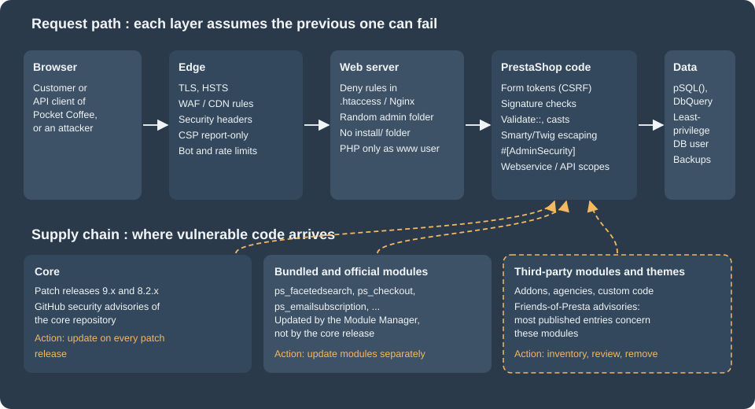

Security
|
This content was generated with the assistance of AI and should be verified against the official documentation before being relied on in production. |
This page was written against PrestaShop 9.2.0 (released 2026-09-30, Symfony 6.4.46, Smarty 4.5.7, Twig 3.27.1, PHP 8.5.12 in the official Docker image) and PrestaShop 8.2.8, the last 8.2 release, which is in security-only extended support, and it was checked on 2026-10-27. Everything here applies to the open-source, self-hosted PrestaShop: the merchant or the agency operates the servers, installs the modules and applies the updates, so the merchant or the agency also owns every vulnerability that is left unpatched. PrestaShop is not a SaaS product and no vendor patches a shop automatically.
PrestaShop is a large PHP code base with a long history, a back office, a public storefront, two HTTP APIs and a marketplace of third-party modules. Its security record therefore has the same shape as that of any comparable platform: a steady flow of advisories on the core, and a larger flow of advisories on modules that are not written by the core team. This page explains how to read that history, what the core gives a module developer to write safe code, what the core does not give (for example a Content-Security-Policy), how to harden a server, how to audit the modules that are already installed, and how to report a problem. It sits after the pages on module basics, on hooks and on the Webservice and Admin API, whose authentication it refers to, and before the page on testing, upgrades and Addons, which covers the update process in detail.
The running example is Pocket Coffee, the small coffee shop of this section. This page gives it a small module, pcfisecurity,
with a signed server-to-server payment callback, a form for joining the Coffee Club that is protected against CSRF, a
parameterised query layer and a back-office page that lists the callbacks and lets an employee purge them. Every example
was installed in a PrestaShop 9.2.0 shop on a local machine and exercised with curl; the results are shown after each one.
The things that could not be run are listed in What was run and what was not.
The layers of defence
No single control protects a shop. The picture shows the layers that a request crosses and the three channels through which vulnerable code enters the shop. The first row is what a developer controls with code, the second row is what an operator controls with updates.

The sections below follow the picture from the bottom to the top: first the history that explains why the supply chain matters, then the code-level rules for the PrestaShop layer, then the server and edge layers, and last the operating procedures.
Advisory history
The core repository publishes its advisories as GitHub Security Advisories on https://github.com/PrestaShop/PrestaShop/security/advisories. At the check date the page showed 61 entries (the count comes from the repository navigation badge, the list does not say how many are published and how many are closed). The most recent published entries, grouped by date, show what kinds of defects reach the core:
| Published | Defect | Severity |
|---|---|---|
2026-08-18 |
Server-side request forgery through image URLs in the CSV import, client IP spoofing through the X-Forwarded-For header, SQL injection through back-office list filters, improper access control on the back-office notifications endpoint, CSV formula injection in exports. The 8.2.8 and 9.1.5 releases were published on the same day. |
High (SSRF, IP spoofing, CSV injection), Moderate (SQL injection in filters, access control) |
2026-05-04 |
Stored cross-site scripting (CWE-79) in the customer service view of the back office |
Critical |
2026-03-23 |
Stored cross-site scripting through unprotected template variables, and improper use of the validation framework |
High, Low |
2026-02-03 |
Time-based user enumeration on the front-office login |
Moderate |
2025-09-04 |
Email enumeration |
Moderate |
Three observations help when planning maintenance. First, the classes of defects are the ordinary ones of a web application (injection, cross-site scripting, access control, enumeration, request forgery); none of them is exotic, and the rules in the next sections are what prevents the same classes in custom modules. Second, several entries concern the back office, so restricting who can reach the back office is not a replacement for patching. Third, entries are fixed in patch releases of the maintained branches, which is why Patching and support windows matters more than any single setting.
Third-party modules and the Friends-of-Presta feed
Most of the vulnerable code in a typical shop is not in the core. The Friends-of-Presta community maintains an independent
feed of advisories at https://security.friendsofpresta.org (its source is the repository friends-of-presta/security-advisories
on GitHub, where each advisory is a Jekyll post). At the check date the feed had 230 entries on 23 pages of 10, and the large
majority concern modules, themes or hosting stacks, not the core. The latest entries show that the risk is not limited to
obscure modules:
| Published | Component | Identifier | Severity |
|---|---|---|---|
2026-05-21 |
|
CVE-2026-39079 |
High (CVSS 8.6) |
2026-02-16 |
|
CVE-2025-69633 |
Critical (CVSS 9.8) |
2025-10-23 |
|
CVE-2025-61922 |
Critical (CVSS 9.1) |
2025-09-04 |
Back-office login (core) |
CVE-2025-51586 |
Low (CVSS 3.7) |
2025-06-10 |
|
CVE-2023-45256 |
listed in the feed |
2025-05-22 |
|
CVE-2024-6648 |
listed in the feed |
2025-01-22 |
|
CVE-2025-24027 |
listed in the feed |
2024-07-26 |
|
CVE-2024-41670 |
listed in the feed |
Two of the eight latest entries are tagged as core and six concern modules, one of them an official payment module. The practical rule is that a module is code from a third party until it has been read, whoever distributes it.
Case study: ps_facetedsearch 3.0.0 to 4.0.3
The most serious recent case in an official module is advisory GHSA-m5f5-28qr-9g9r, CVE-2026-54159, published on
2026-06-03 with the maximum CVSS score of 10.0 (network attack, low complexity, no privileges, no user interaction, changed
scope, high impact on confidentiality, integrity and availability). The module ps_facetedsearch powers the filters on category
pages. In versions 3.0.0 through 4.0.3 it read a cached filter block with PHP unserialize(), so an unauthenticated visitor
who could influence the cached data could trigger PHP object injection and, with a suitable class available, remote code
execution. The fix is release 4.0.4. The advisory lists a workaround for shops that cannot update at once: remove the price
and weight slider filters, clear the cache, audit the module directory and put a web application firewall in front of the
shop. It also gives the manual code change, which is the pattern used in the rest of this page: replace the native call by
the core helper that refuses to build objects.
// ps_facetedsearch, src/Filters/Block.php, getFromCache(): before the fix
return unserialize(current($row));
// after the fix (the module 5.1.0 bundled with PrestaShop 9.2.0 contains this form)
return Tools::unSerialize(current($row));The PrestaShop 9.2.0 image bundles ps_facetedsearch 5.1.0. The installed version of any module is available from the
command line, which is how to check a shop against an advisory:
bin/console prestashop:module:listThe output of the command on the local shop contained these rows (the other 80 rows are omitted):
| Name | Version | Status | | ps_checkout | 9.5.5.3 | Enabled | | ps_facetedsearch | 5.1.0 | Enabled |
The helper itself is part of the core class Tools. It was hardened in PrestaShop 9.0.1 and, with object loading disabled
(the default), it rejects any serialized string that contains an object and passes allowed_classes set to false to the
native function. On the local shop:
var_dump(Tools::unSerialize('a:1:{i:0;i:5;}')); // array(1) { [0]=> int(5) }
var_dump(Tools::unSerialize('O:8:"stdClass":0:{}')); // bool(false)
var_dump(Tools::unSerialize('a:1:{i:0;O:8:"stdClass":0:{}}')); // bool(false)For new code the better choice is not to serialize PHP values at all: store JSON and decode it with json_decode() and
JSON_THROW_ON_ERROR, as the callback controller below does.
Responsible disclosure and the security policy
PrestaShop’s security policy (https://www.prestashop-project.org/security/security-policy/, the devdocs page of the same name redirects there) asks reporters to write to the security team by e-mail (the address is obfuscated on the page) or to use the bug bounty programme, and states that a vulnerability is made public when a patch is ready. The page lists no dates and no table of supported versions. The patch process is described in the release documentation: a trigger bug, which is a major bug or a security issue in a maintained branch, starts a six-week timer for the next patch release, and security issues are fixed in private with GitHub Security Advisories before publication.
For a module developer the same rule applies in the small. Publish a contact address in the module documentation or the repository, accept private reports, fix first and announce afterwards, and ask for a CVE through GitHub or through the Friends-of-Presta process so that shops can detect the vulnerable versions by scanning.
Reporting a problem found in a module that someone else distributes follows the same route: the publisher first, then the Friends-of-Presta team, which coordinates disclosure for modules, and the PrestaShop security team for core code.
Patching and support windows
Security is bounded by the versions that still receive fixes. At the check date:
| Item | State on 2026-10-27 |
|---|---|
PrestaShop 9.2.0 |
Current release, published 2026-09-30. 9.1.5 and 9.0.3 are the latest patch releases of the previous minor lines. |
PrestaShop 8.2.x |
Extended support: patch releases only for critical bugs or security fixes, until 10.0.0 is released. 8.2.8 was published 2026-08-18. No date for 10.0.0 has been published. The policy dates from June 2025 and says it may be revised. |
PHP 8.1 |
End of life since 2025-12-31, although PrestaShop 9.x still accepts it as the minimum version. |
PHP 8.2 |
Security support ends on 2026-12-31. |
PHP 8.3, 8.4, 8.5 |
Security support ends on 2027-12-31, 2028-12-31 and 2029-12-31. |
Symfony 6.4 (9.x) |
Bug fixes until November 2026, security fixes until November 2027. |
Two conclusions follow. A 9.x shop that runs on PHP 8.1 or 8.2 should move to PHP 8.4 or 8.5 before the end of the year, and a shop that still runs 1.7 or 8.0/8.1 is outside every support window of the project. The update procedure and the minimum version of the Update Assistant that is required to reach 9.2 are described in testing, upgrades and Addons.
Source: PHP: Supported versions
Secure coding rules for modules
PrestaShop 9 gives module developers a set of primitives. The table summarises the rules that the rest of this section demonstrates; the module is the one described in the introduction and its sources are shown in the sections that use them.
| Risk | Rule | Primitive in 9.2.0 |
|---|---|---|
SQL injection |
Cast numbers, escape strings, build queries with the query builder, never concatenate request data |
|
Cross-site scripting |
Escape on output, do not mark request data as safe, validate HTML before storing it |
Smarty front-office escaping ( |
Cross-site request forgery (front office) |
Put a token in every state-changing form and compare it in constant time |
|
Cross-site request forgery (back office) |
Use the tokenised route URLs of the back office, and Symfony CSRF tokens for forms you render yourself |
|
Broken access control |
Declare the permission of every back-office action, and require login on customer pages |
|
Forged server-to-server calls |
Authenticate the sender with a signature over the raw body and compare it in constant time |
|
Object injection |
Do not unserialize data you did not produce, prefer JSON |
|
Direct script access |
Never expose PHP files that run outside a controller, add |
|
Secrets in code |
Read secrets from configuration or the environment, never commit them, never log them |
|
Module skeleton used by the examples
The main class registers nothing but a table and a configuration key. The secret used to verify the callback is generated
on installation with Tools::passwdGen(), so no two shops share it and no secret is committed:
<?php
declare(strict_types=1);
if (!defined('_PS_VERSION_')) {
exit;
}
if (file_exists(__DIR__ . '/vendor/autoload.php')) {
require_once __DIR__ . '/vendor/autoload.php';
}
class Pcfisecurity extends Module
{
public function __construct()
{
$this->name = 'pcfisecurity';
$this->tab = 'administration';
$this->version = '1.0.0';
$this->author = 'Pocket Coffee';
$this->need_instance = 0;
$this->ps_versions_compliancy = ['min' => '9.0.0', 'max' => '9.99.99'];
$this->bootstrap = true;
parent::__construct();
$this->displayName = $this->trans('Pocket Coffee security examples', [], 'Modules.Pcfisecurity.Admin');
$this->description = $this->trans('Signed callback, CSRF token and parameterised SQL examples.', [], 'Modules.Pcfisecurity.Admin');
}
public function isUsingNewTranslationSystem(): bool
{
return true;
}
public function install(): bool
{
return parent::install()
&& $this->installTable()
&& Configuration::updateValue('PCFISECURITY_CALLBACK_SECRET', Tools::passwdGen(40));
}
public function uninstall(): bool
{
return Db::getInstance()->execute('DROP TABLE IF EXISTS `' . _DB_PREFIX_ . 'pcfisecurity_log`')
&& Configuration::deleteByName('PCFISECURITY_CALLBACK_SECRET')
&& parent::uninstall();
}
private function installTable(): bool
{
return Db::getInstance()->execute(
'CREATE TABLE IF NOT EXISTS `' . _DB_PREFIX_ . 'pcfisecurity_log` (
`id_pcfisecurity_log` INT UNSIGNED NOT NULL AUTO_INCREMENT,
`id_cart` INT UNSIGNED NOT NULL,
`reference` VARCHAR(64) NOT NULL,
`amount` DECIMAL(20,6) NOT NULL,
`date_add` DATETIME NOT NULL,
PRIMARY KEY (`id_pcfisecurity_log`)
) ENGINE=' . _MYSQL_ENGINE_ . ' DEFAULT CHARSET=utf8mb4'
);
}
}Every folder of the module also contains the standard index.php that redirects to the parent directory, so that a directory
listing never shows the module’s files if the web server allows listings. This is a rule of the Addons validation checklist
("an index.php file exists in each folder") and it matters because of the wildcard service resources described in the
page on module services: exclude index.php from them.
On PrestaShop 9 a second protection exists, a .htaccess in the modules folder, which is described in
Hardening a shop.
SQL injection
The core exposes two escaping functions and a query builder. pSQL() calls Db::escape(), which leaves numbers untouched, escapes
quotes with the connection’s escape function and, unless the second argument is true, strips HTML tags and turns newlines into
br. bqSQL() additionally escapes the backtick, and is meant for identifiers. Casting with (int) and (float) is the
right control for numeric values. The query builder DbQuery assembles select, from, where, orderBy and limit parts but does
not escape what is put into them, so where() still needs pSQL() for strings.
The repository class of the module keeps an unsafe method on purpose, so that the effect of the rule can be measured:
<?php
declare(strict_types=1);
namespace PrestaShop\Module\Pcfisecurity\Repository;
final class LogRepository
{
/**
* Anti-pattern kept for the demonstration: the reference goes into the SQL text unescaped.
*/
public function findByReferenceUnsafe(string $reference): array
{
$sql = 'SELECT * FROM `' . _DB_PREFIX_ . "pcfisecurity_log` WHERE `reference` = '" . $reference . "'";
return \Db::getInstance()->executeS($sql) ?: [];
}
public function findByReference(string $reference): array
{
$query = (new \DbQuery())
->select('*')
->from('pcfisecurity_log')
->where('`reference` = \'' . pSQL($reference) . '\'');
return \Db::getInstance()->executeS($query) ?: [];
}
public function findLatest(int $limit): array
{
$query = (new \DbQuery())
->select('*')
->from('pcfisecurity_log')
->orderBy('`id_pcfisecurity_log` DESC')
->limit(max(1, min($limit, 100)));
return \Db::getInstance()->executeS($query) ?: [];
}
public function add(int $idCart, string $reference, float $amount): bool
{
return \Db::getInstance()->insert('pcfisecurity_log', [
'id_cart' => $idCart,
'reference' => pSQL($reference),
'amount' => $amount,
'date_add' => date('Y-m-d H:i:s'),
]);
}
public function purge(): bool
{
return \Db::getInstance()->execute('TRUNCATE TABLE `' . _DB_PREFIX_ . 'pcfisecurity_log`');
}
}A script run in the shop context inserted two rows (the callback test below had already added one) and then queried them with
the attack string x' OR '1'='1 through both methods:
$attack = "x' OR '1'='1";
printf("unsafe rows: %d\n", count($repo->findByReferenceUnsafe($attack)));
printf("safe rows: %d\n", count($repo->findByReference($attack)));
printf("safe, legit: %d\n", count($repo->findByReference('PC-COL-ESP-1KG')));
echo "pSQL: ", pSQL($attack), "\n";Output on PrestaShop 9.2.0:
unsafe rows: 3 safe rows: 0 safe, legit: 1 pSQL: x\' OR \'1\'=\'1
The unsafe method returned every row of the table, the safe method returned none for the attack and one for the legitimate
reference. Three more results from the same script document how the helpers behave: pSQL('<b>bold</b> 1') returned
bold 1 and pSQL('<b>bold</b> 1', true) returned the markup unchanged; bqSQL() applied to an identifier that contained a backtick returned it with the
backtick escaped by a backslash; the cast of the string 12abc; DROP TABLE x to int returned 12.
Db::insert() and Db::update() with an array take care of quoting the column names, but the values still have to be
passed through pSQL() unless they are numeric, as the add() method above does. The recurring defects in the advisories (for
example the SQL injection through back-office list filters) come from a value that reached a query without one of these
steps. A review of a third-party module can start by searching for request data inside query text: in the modules bundled
with the shop the search for WHERE or SET followed by Tools::getValue( returned only lines where the value is cast to int
first.
Source: PrestaShop devdocs: Db class
Source: PrestaShop devdocs: DbQuery
Input and validation
Tools::getValue() reads $_POST first and then $_GET, and removes NUL bytes (on the shop a value with a NUL byte between the letters ab and cd came back as
abcd). It does not validate or escape anything else. Validation is the job of the Validate class, whose methods return
booleans: isUnsignedId(), isEmail(), isCleanHtml() and many more. Validate::isCleanHtml() rejects markup with event
attributes: on the local shop <a onclick="x()">a</a> returned false and <p>ok</p> returned true. The good-practices page of
the project adds the rules for uploads (check the file type with mime_content_type()), for forms (show a confirmation or an error and
validate with Validate) and for optional PHP extensions (check with extension_loaded()).
The HTML purifier of the core, Tools::purifyHTML(), is controlled by the setting PS_USE_HTMLPURIFIER (enabled on the
local shop). It is configured as a trusted purifier (HTML.Trusted is true), which keeps script elements: on the local
shop <p onclick="x()">Hi<script>alert(1)</script></p> came back with the onclick attribute removed and the script
element still present. It is meant to normalise rich text written by back-office users, not to make hostile input safe. Never
use its output as a replacement for output escaping. When the setting PS_ALLOW_HTML_IFRAME is enabled the purifier also allows
iframe and object elements from any source (URI.SafeIframeRegexp is set to /.*/), which is a deliberate widening and should stay
off unless the shop needs embedded video.
Output escaping in Smarty and Twig
The front office renders with Smarty 4.5.7, and the core front configuration turns on escape_html
(config/smartyfront.config.inc.php), so {$variable} is HTML-escaped by default. The escape is bypassed by the modifier
nofilter, which is needed for markup that was produced on purpose (for example a rendered widget) and is the usual place where
the stored cross-site scripting of the March 2026 advisory lives: a variable that carries user data, rendered with nofilter.
The back office renders with Twig, which escapes {{ variable }} by default; the filter raw is the equivalent bypass.
The template of the Coffee Club page shows a value taken from the query string. The controller passes it unchanged, the template escapes it, and a request with a script in the query string is rendered inert:
{extends file='page.tpl'}
{block name='page_content'}
{if $pcfi_message}<p class="pcfi-message">{$pcfi_message}</p>{/if}
{if $pcfi_coffee}<p class="pcfi-coffee">{$pcfi_coffee}</p>{/if}
<form method="post" action="{$pcfi_action}">
<input type="hidden" name="token" value="{$pcfi_token}">
<button type="submit" name="submitJoin" value="1">{l s='Join the Coffee Club' d='Modules.Pcfisecurity.Shop'}</button>
</form>
{/block}Request with ?coffee=<script>alert(1)</script> on the local shop, with the template above:
<p class="pcfi-coffee"><script>alert(1)</script></p>
The same request after changing only {$pcfi_coffee} to {$pcfi_coffee nofilter} and clearing the compiled Smarty templates (reflected
cross-site scripting), and a request with an img element carrying an onerror attribute:
<p class="pcfi-coffee"><script>alert(1)</script></p> <p class="pcfi-coffee"><img src=x onerror=alert(1)></p>
The original template was restored afterwards. The review rule is simple: every nofilter in a template must be justified by a
value that the module itself generated, and a search for the keyword is the first step of an audit (the modules of this 9.2.0
install contain it in 32 template files, which is normal for rendered widgets and is why the reviewer has to read each use).
Since PrestaShop 9.0 the translation functions trans() and the Smarty l function no longer escape their output, and the
parameters htmlspecialchars and addslashes were removed. A translated string that is built from user input
must therefore be escaped by the caller.
CSRF tokens on front-office forms
The front controller join lets a logged-in customer join the Coffee Club. Joining changes data, so the form carries a token
that is derived from the customer, the password hash and a page name, and the controller compares it in constant time. The
property $auth = true makes the dispatcher redirect anonymous visitors to the login page, and $authRedirection is the
back value used after the login.
<?php
declare(strict_types=1);
/**
* "Join the Coffee Club" form, protected against CSRF: /module/pcfisecurity/join
*
* @property Pcfisecurity $module
*/
class PcfisecurityJoinModuleFrontController extends ModuleFrontController
{
private const TOKEN_PAGE = 'pcfisecurity-join';
public $auth = true;
public $authRedirection = 'module-pcfisecurity-join';
private string $message = '';
public function postProcess(): void
{
if (!Tools::isSubmit('submitJoin')) {
return;
}
$token = (string) Tools::getValue('token');
if (!hash_equals(Tools::getToken(self::TOKEN_PAGE), $token)) {
http_response_code(403);
$this->message = $this->trans('Invalid or expired form token.', [], 'Modules.Pcfisecurity.Shop');
return;
}
// a real module would add the customer to the Coffee Club group here
$this->message = $this->trans('Welcome to the Coffee Club.', [], 'Modules.Pcfisecurity.Shop');
}
public function initContent(): void
{
parent::initContent();
$this->context->smarty->assign([
'pcfi_token' => Tools::getToken(self::TOKEN_PAGE),
'pcfi_message' => $this->message,
'pcfi_coffee' => (string) Tools::getValue('coffee'),
'pcfi_action' => $this->context->link->getModuleLink($this->module->name, 'join'),
]);
$this->setTemplate('module:pcfisecurity/views/templates/front/join.tpl');
}
}Tools::getToken($page) returns Tools::hash($customerId . $passwordHash . $page), where the hash uses the shop’s cookie_key.
With a logged-in customer the token is therefore different for every customer, and it changes when the customer’s password
changes. For a guest the customer id and the password are empty, so the token depends only on the page name. Do not use it as a
secret for anonymous forms; require a session or a login for any action that matters.
Test on the local shop with a customer created for the run (ada-pcfisec@example.test, removed at the end), logged in with
curl:
# GET the page, keep the cookie jar, read the token from the form
curl -s -c cj.txt -b cj.txt http://localhost:8080/module/pcfisecurity/join -o join.html
TOK=$(grep -o 'name="token" value="[0-9a-f]*"' join.html | grep -o '[0-9a-f]\{32\}')
curl -s -b cj.txt -o /dev/null -w 'valid token: %{http_code}\n' -d "token=${TOK}" -d submitJoin=1 http://localhost:8080/module/pcfisecurity/join
curl -s -b cj.txt -o /dev/null -w 'forged token: %{http_code}\n' -d "token=00000000000000000000000000000000" -d submitJoin=1 http://localhost:8080/module/pcfisecurity/join
curl -s -b cj.txt -o /dev/null -w 'no token: %{http_code}\n' -d submitJoin=1 http://localhost:8080/module/pcfisecurity/join
curl -s -o /dev/null -w 'anonymous: %{http_code} %{redirect_url}\n' -d submitJoin=1 http://localhost:8080/module/pcfisecurity/joinResults on PrestaShop 9.2.0:
valid token: 200 (page shows "Welcome to the Coffee Club.") forged token: 403 (page shows "Invalid or expired form token.") no token: 403 anonymous: 302 http://localhost:8080/login?back=module-pcfisecurity-join
Authenticating a server-to-server callback
Payment providers call the shop to say that a payment succeeded. That endpoint cannot use cookies or form tokens, and
the checklist of the Addons validation for payment modules says what to do instead: double check the cart id before creating
the order, pass the amount reported by the provider (not getOrderTotal()) to validateOrder() when the order is created only
after the provider approves, and verify the origin of the call with a signature or a token. The example does the same
without creating orders: it verifies a signature, validates the body, compares the amount with the cart and records the
callback.
The signature check lives in a small class so that it can be unit tested without PrestaShop (the testing page does exactly that):
<?php
declare(strict_types=1);
namespace PrestaShop\Module\Pcfisecurity\Security;
/**
* Verifies a "hex(HMAC-SHA256(secret, raw body))" signature in constant time.
*/
final class SignatureVerifier
{
public function __construct(private readonly string $secret)
{
}
public function sign(string $rawBody): string
{
return hash_hmac('sha256', $rawBody, $this->secret);
}
public function isValid(string $rawBody, string $signature): bool
{
if ($this->secret === '' || $signature === '') {
return false;
}
return hash_equals($this->sign($rawBody), strtolower($signature));
}
}The front controller reads the raw body (never through $_POST, because a signature covers the exact bytes), limits its
size, verifies the signature before it parses anything, validates every field, and answers with a status code that tells the
provider whether to retry:
<?php
declare(strict_types=1);
use PrestaShop\Module\Pcfisecurity\Repository\LogRepository;
use PrestaShop\Module\Pcfisecurity\Security\SignatureVerifier;
/**
* Server-to-server callback of a payment provider: POST /module/pcfisecurity/callback
*
* @property Pcfisecurity $module
*/
class PcfisecurityCallbackModuleFrontController extends ModuleFrontController
{
private const MAX_BODY_BYTES = 65536;
public $ssl = true;
public function postProcess(): void
{
$this->respond($this->handle());
}
public function initContent(): void
{
// no HTML output: everything is answered in postProcess()
}
/**
* @return array{0:int,1:array<string,mixed>}
*/
private function handle(): array
{
if (($_SERVER['REQUEST_METHOD'] ?? '') !== 'POST') {
return [405, ['error' => 'method_not_allowed']];
}
$rawBody = (string) file_get_contents('php://input', false, null, 0, self::MAX_BODY_BYTES + 1);
if ($rawBody === '' || strlen($rawBody) > self::MAX_BODY_BYTES) {
return [400, ['error' => 'bad_body']];
}
$verifier = new SignatureVerifier((string) Configuration::get('PCFISECURITY_CALLBACK_SECRET'));
$signature = (string) ($_SERVER['HTTP_X_POCKET_SIGNATURE'] ?? '');
if (!$verifier->isValid($rawBody, $signature)) {
return [401, ['error' => 'bad_signature']];
}
try {
$payload = json_decode($rawBody, true, 8, JSON_THROW_ON_ERROR);
} catch (JsonException) {
return [400, ['error' => 'bad_json']];
}
$idCart = (int) ($payload['cart_id'] ?? 0);
$reference = (string) ($payload['reference'] ?? '');
$amount = $payload['amount'] ?? null;
if (!Validate::isUnsignedId($idCart) || $idCart === 0
|| !preg_match('/^[A-Z0-9-]{6,32}$/', $reference)
|| !is_numeric($amount)) {
return [422, ['error' => 'invalid_fields']];
}
$cart = new Cart($idCart);
if (!Validate::isLoadedObject($cart)) {
return [404, ['error' => 'unknown_cart']];
}
// the amount sent by the provider must match the cart; a mismatch is logged, not accepted
$expected = round((float) $cart->getOrderTotal(true, Cart::BOTH), 2);
if (abs($expected - round((float) $amount, 2)) > 0.001) {
return [409, ['error' => 'amount_mismatch', 'expected' => number_format($expected, 2, '.', '')]];
}
(new LogRepository())->add($idCart, $reference, (float) $amount);
return [200, ['status' => 'ok']];
}
/**
* @param array{0:int,1:array<string,mixed>} $result
*/
private function respond(array $result): void
{
[$status, $body] = $result;
http_response_code($status);
header('Content-Type: application/json');
$this->ajaxRender((string) json_encode($body));
exit;
}
}The test uses the secret that the installation stored in the shop configuration, taken from the database in the shell
variable CALLBACK_SECRET (a throw-away value, not shown) and signs the body with OpenSSL:
URL=http://localhost:8080/module/pcfisecurity/callback
sign() { printf '%s' "$1" | openssl dgst -sha256 -hmac "${CALLBACK_SECRET}" | awk '{print $NF}'; }
send() { curl -s -w ' [%{http_code}]\n' -X POST -H "X-Pocket-Signature: $(sign "$1")" -d "$1" "${URL}"; }
curl -s -w ' [%{http_code}]\n' "${URL}" # wrong method
curl -s -w ' [%{http_code}]\n' -X POST -d '{}' "${URL}" # no signature
curl -s -w ' [%{http_code}]\n' -X POST -H 'X-Pocket-Signature: deadbeef' -d '{}' "${URL}"
send '{"cart_id":999999,"reference":"PC-ETH-WHL-250","amount":8.9}' # unknown cart
send 'not json'
send '{"cart_id":0,"reference":"bad ref","amount":"x"}'
send '{"cart_id":1,"reference":"PC-ETH-WHL-250","amount":1}' # wrong amount
send '{"cart_id":1,"reference":"PC-ETH-WHL-250","amount":54.84}' # correct amountResults (the cart 1 of the local shop had a total of 54.84 EUR, tax included, at the time):
| Case | Status | Body |
|---|---|---|
GET instead of POST |
405 |
|
POST without signature, or with a wrong one |
401 |
|
Valid signature, unknown cart |
404 |
|
Valid signature, body is not JSON |
400 |
|
Valid signature, invalid fields |
422 |
|
Valid signature, wrong amount |
409 |
|
Valid signature, correct amount |
200 |
|
After the last call the table contained one row: cart 1, reference PC-ETH-WHL-250, amount 54.84. A first version of the
controller returned the expected total as a float, which JSON encoded as 54.840000000000003; formatting it with
number_format() fixes the response. The three design decisions worth copying are: the signature is checked before the body is
parsed; hash_equals() is used so that the comparison time does not reveal how many leading characters matched; and the
amount comes from the shop’s own cart, so a valid signature on a body for another amount cannot create a cheaper order.
A real integration would also check a timestamp inside the signed body to bound replays and would make the handler idempotent
on the provider’s event id.
Source: PHP: hash_equals
Back-office controllers: permissions and CSRF
Back-office actions are Symfony controllers. Since PrestaShop 9.0 they extend PrestaShopAdminController (the older
FrameworkBundleAdminController is deprecated) and are secured with the #[AdminSecurity] PHP attribute, which replaced the
earlier annotation of the same name. The attribute holds an expression evaluated by the security voter, normally
is_granted('read', request.get('_legacy_controller')), and the permission is looked up for the tab named by the route’s
_legacy_controller default. The four permissions are create, read, update and delete. The module below has two
actions, a read-only list and a purge that needs the delete permission and, because the form is rendered by the module itself, validates a
Symfony CSRF token.
<?php
declare(strict_types=1);
namespace PrestaShop\Module\Pcfisecurity\Controller\Admin;
use PrestaShop\Module\Pcfisecurity\Repository\LogRepository;
use PrestaShopBundle\Controller\Admin\PrestaShopAdminController;
use PrestaShopBundle\Security\Attribute\AdminSecurity;
use Symfony\Component\HttpFoundation\RedirectResponse;
use Symfony\Component\HttpFoundation\Request;
use Symfony\Component\HttpFoundation\Response;
class LogController extends PrestaShopAdminController
{
public function __construct(private readonly LogRepository $logs)
{
}
#[AdminSecurity("is_granted('read', request.get('_legacy_controller'))")]
public function indexAction(): Response
{
return $this->render('@Modules/pcfisecurity/views/templates/admin/log.html.twig', [
'layoutTitle' => 'Pocket Coffee callback log',
'rows' => $this->logs->findLatest(20),
]);
}
#[AdminSecurity("is_granted('delete', request.get('_legacy_controller'))", redirectRoute: 'admin_pcfisecurity_log')]
public function purgeAction(Request $request): RedirectResponse
{
if (!$this->isCsrfTokenValid('pcfisecurity_purge', (string) $request->request->get('_token'))) {
throw $this->createAccessDeniedException('Invalid CSRF token.');
}
$this->logs->purge();
return $this->redirectToRoute('admin_pcfisecurity_log');
}
}admin_pcfisecurity_log:
path: /pcfisecurity/log
methods: [GET]
defaults:
_controller: 'PrestaShop\Module\Pcfisecurity\Controller\Admin\LogController::indexAction'
_legacy_controller: AdminPcfisecurityLog
_legacy_link: AdminPcfisecurityLog
admin_pcfisecurity_log_purge:
path: /pcfisecurity/log/purge
methods: [POST]
defaults:
_controller: 'PrestaShop\Module\Pcfisecurity\Controller\Admin\LogController::purgeAction'
_legacy_controller: AdminPcfisecurityLogservices:
_defaults:
public: false
autowire: true
autoconfigure: true
PrestaShop\Module\Pcfisecurity\Repository\LogRepository: ~
PrestaShop\Module\Pcfisecurity\Controller\Admin\LogController: ~{% extends '@PrestaShop/Admin/layout.html.twig' %}
{% block content %}
<div class="card"><div class="card-body">
<table class="table">
{% for row in rows %}
<tr><td>{{ row.id_cart }}</td><td>{{ row.reference }}</td><td>{{ row.amount }}</td><td>{{ row.date_add }}</td></tr>
{% else %}
<tr><td>No callbacks yet.</td></tr>
{% endfor %}
</table>
<form method="post" action="{{ path('admin_pcfisecurity_log_purge') }}">
<input type="hidden" name="_token" value="{{ csrf_token('pcfisecurity_purge') }}">
<button class="btn btn-danger" type="submit">Purge</button>
</form>
</div></div>
{% endblock %}Installing the module created a hidden tab AdminPcfisecurityLog (inactive, without parent) and the permission rows
ROLE_MOD_TAB_ADMINPCFISECURITYLOG_CREATE|READ|UPDATE|DELETE in ps_authorization_role, besides the module-level roles
ROLE_MOD_MODULE_PCFISECURITY_*. The installer logged one harmless error line, "Cannot register tab AdminPcfisecurityLog because it
already exists", because the route default and the module tab registration both tried to create it. Employee profiles get
access to the tab in Advanced Parameters > Team > Permissions.
Two mechanisms protect the back-office URLs. The first is the _token query parameter that the back-office URL generator
adds to every route URL (path() in Twig does it); a request without a valid token is answered with a redirect to the
security page security/compromised, which offers a link with the right token. The second is the voter of
#[AdminSecurity]. A test with curl on the local shop, after logging in as the local administrator:
# without the _token parameter: redirected to the "compromised" page
curl -s -b bo.txt -o /dev/null -w '%{http_code}\n' "http://localhost:8080/${ADMIN_DIR}/modules/pcfisecurity/log"
# with the tokenised URL taken from the page: the callback table is rendered
curl -s -b bo.txt -o log.html -w '%{http_code}\n' "${LOG_URL_WITH_TOKEN}"
# POST to the purge URL (it carries its own _token) with a bad and then a good Symfony CSRF token
curl -s -b bo.txt -o /dev/null -w '%{http_code}\n' -d '_token=bad' "${PURGE_URL_WITH_TOKEN}"
curl -s -b bo.txt -o /dev/null -w '%{http_code}\n' --data-urlencode "_token=${CSRF_FROM_FORM}" "${PURGE_URL_WITH_TOKEN}"Results: the URL without the token returned 302 to the security page; the tokenised URL returned 200 and listed the three rows that the earlier tests had written; the purge with a bad CSRF token returned 302 and left the three rows in the table; the purge with the token from the form returned 302 to the log page and the table became empty.
The core ships a linter that finds back-office routes without the attribute:
bin/console prestashop:linter:security-attribute find-missing
bin/console prestashop:linter:security-attribute listOn the shop the first command listed three routes of the Marketplace module (admin_mbo_module_cdc_error,
admin_mbo_recommended_modules, admin_mbo_addons_module_upgrade). The linter only inspects routes whose names start with
admin_, which is why the module routes above are named admin_pcfisecurity_log and admin_pcfisecurity_log_purge: routes
with other names never appear in either list. After the names were changed, list showed both module actions as secured with
the permissions read and delete. When the attribute was removed from purgeAction() and the cache was cleared,
find-missing listed admin_pcfisecurity_log_purge (the command returns exit code 1 when it finds something, so it can fail
a CI job); restoring the attribute made it disappear. The sibling linter prestashop:linter:naming-convention is written for the core’s route
naming and, for this module, printed the names it would expect (admin_logs_index and admin_logs_purge); treat it as advice, not as a rule for modules.
Files, cron scripts and direct access
PrestaShop 9.0 forbids calling PHP files under modules/ directly; every entry point must be a controller. The
core modules/.htaccess enforces it: it denies requests for files that end in .php, .log, .txt, .lock, .json, .yml,
.yaml, .tpl, .twig, config.xml and the localised config_xx.xml files, using Require all denied on Apache 2.4 and
the older Deny from all on Apache 2.2. On the local shop the files of the module pcfisecurity returned 403 for
pcfisecurity.php, a Smarty template, composer.json and vendor/composer/installed.php. Nginx does not read .htaccess, so on Nginx
the same deny rules must be written in the server configuration.
A cron job should therefore be a front controller that refuses non-CLI calls and checks a token, as in the sample of the
developer documentation, or better a Symfony console command that is run by the system cron. A module that stores files should
write them to var/modules/<name>/ (static data) or var/cache/<env>/modules/<name>/ (cache) and not to the module folder; a
module that accepts uploads must check the type of the file and store it outside the web root or with the execution of scripts
disabled.
Secrets
The file app/config/parameters.php holds the database credentials, the mailer credentials, the secret of the Symfony
kernel, the cookie_key and cookie_iv that encrypt cookies and are used to compute tokens, new_cookie_key, and the public
and private key of the Admin API. Treat it like a private key: keep it out of repositories, backups that leave the server,
bug reports and screenshots; the web server must answer 403 for it (it does by default, see below). A leaked cookie_key
lets an attacker forge cookies and tokens, and changing it logs every user out. Module secrets, such as the callback secret
above, belong in the Configuration table or in environment variables, are generated per shop and are never logged. This
documentation never prints the values of the local shop; examples use placeholders and shell variables.
Hardening a shop
Behind a load balancer on several nodes, the same controls apply with extra points (TLS termination, the client IP, the back office on its own host, a managed database whose TLS the core cannot request); see Cloud: Cache, Sessions and Back Office and Cloud: Managed Database (RDS and Aurora).
What the installer already does
The web installer renames the admin folder to a random name (the local installation logged "The admin folder was renamed into
admin170iiqhcg4nvcac0mw2/" and a request for /admin/ now returns 404), and from PrestaShop 9.2 it also deletes the install/
folder automatically, as the changelog of 9.2 describes (only a folder named exactly install is removed, install-dev is not
touched, and a failure to delete only logs a warning). The local installation logged "The install/ folder was removed." Check that
both statements hold on a shop that was installed with an older version, or that was built with the Docker image and a custom
admin folder name.
Exposure probe
The following probe requested paths that must never be reachable from the Internet on the local 9.2.0 shop (Apache 2.4.68, the
default .htaccess generated by the installer, no extra rules):
| Path | Status | Comment |
|---|---|---|
|
403 |
Credentials and keys |
|
403 |
Logs can contain tokens and personal data |
|
403 |
Blocked by the |
|
403 |
Same rule |
|
403 |
Directory protection files |
|
403 |
Code is not served |
|
403 |
|
|
404 |
Removed by the installer |
|
404 |
Not present in the web root |
|
200 |
Harmless text, but it shows that the shop is PrestaShop; delete it if you want to reduce fingerprinting |
|
401 |
Webservice, authentication required |
The same probe is worth adding to a deployment pipeline for any shop. It only checks what the web server answers, so a shop behind
Nginx must be probed separately, because the .htaccess files do not apply there.
Configuration and server settings
The core’s configuration page tells production shops to disable debug mode: _PS_MODE_DEV_ and _PS_DEBUG_PROFILING_ must be
false (the defaults of config/defines.inc.php), because debug mode prints stack traces and has a large performance cost.
The Docker image takes the setting from the environment variable PS_DEV_MODE; its default is 0, but the value is tested for
truthiness, so the string false also enables debug mode: leave the variable unset or set it to 0. The pre-9.2 documentation
claims the default is 1, which is not what the image does.
| Control | Notes |
|---|---|
HTTPS |
Enable it in Shop Parameters > General ( |
Cookies |
Front-office cookies are issued with |
Proxy and client IP |
The advisory of 2026-08-18 about IP spoofing through the X-Forwarded-For header was fixed in the core: in 9.2.0 |
PHP |
Run a supported PHP (see the table above), keep OPcache on and |
Database |
Use a dedicated MySQL or MariaDB account that has rights on the shop schema only, not |
Webservice and Admin API |
Enable the Webservice only if it is used, give each key only the resources and methods it needs, and use the Admin API client credentials with the narrowest scopes. See the pages on the Webservice and the Admin API. |
Back office |
Use strong passwords for every employee, give profiles only the permissions they need, remove former employees, and restrict the admin folder by IP or VPN in the web server configuration where possible. The folder name is not a secret: it appears in links and referers. |
File permissions |
Files readable by the PHP user, writable only by the directories that PrestaShop writes at run time (for example |
Maintenance mode |
|
Security headers and Content-Security-Policy
The core sets no Content-Security-Policy, X-Frame-Options or Strict-Transport-Security header. A search of the 9.2.0 PHP,
.htaccess, YAML and template files outside vendor/ for Content-Security-Policy returned nothing, the developer
documentation for 8 and 9 does not mention CSP, and the front-page response of the local shop carries only cookie flags. The
.htaccess it generates sets Access-Control-Allow-Origin "*" for fonts and svg files and removes the ETag header. Headers are
therefore a web server or CDN responsibility.
A strict CSP is hard on a PrestaShop shop because themes and modules print inline scripts and because tag managers and checkout
modules load scripts from other origins; a policy that forbids inline scripts breaks them. The practical path is to start with
Content-Security-Policy-Report-Only, collect the reports, and tighten the policy gradually (this guidance is an inference
from how the platform is built, not a documented procedure). A configuration that sets the other headers and a report-only policy
was syntax checked and served by Apache 2.4 in a separate container (it was not applied to the shop):
<IfModule mod_headers.c>
Header always set X-Content-Type-Options "nosniff"
Header always set Referrer-Policy "strict-origin-when-cross-origin"
Header always set X-Frame-Options "SAMEORIGIN"
Header always set Permissions-Policy "geolocation=(), camera=(), microphone=()"
Header always set Strict-Transport-Security "max-age=31536000" "expr=%{HTTPS} == 'on'"
# report-only first: a strict policy breaks inline scripts of themes, modules and analytics tags
Header always set Content-Security-Policy-Report-Only "default-src 'self'; script-src 'self' 'unsafe-inline'; img-src 'self' data: https:; style-src 'self' 'unsafe-inline'"
</IfModule>httpd -t reported "Syntax OK" with the headers module loaded, and curl -I over HTTP returned all of the headers except
Strict-Transport-Security, which the condition on %{HTTPS} correctly withholds on a plain HTTP connection.
Source: Apache HTTP Server: mod_headers
Source: MDN: Content Security Policy
Auditing the modules that are installed
Because the feed shows that modules are the main source of advisories, a periodic audit pays off more than any server setting. A suggested routine for Pocket Coffee, run at least monthly and after each update:
-
List the modules and their versions with
bin/console prestashop:module:listand remove those that are not needed (uninstall and delete them; a disabled module is still code on disk, even thoughmodules/.htaccessstops direct calls). -
Compare each version with the advisories of the core repository, of the module’s own repository and of the Friends-of-Presta feed.
-
For modules that came from outside Addons, read the code. Search for the patterns that the advisories mention.
-
Update modules in staging first, then in production, and keep the previous version of the module folder until the shop has run a day.
The searches below were run on the local 9.2.0 install, excluding vendor and vendor-prefixed folders:
cd modules
grep -rIn --include=*.php -E '(^|[^a-zA-Z_:>])unserialize\(' --exclude-dir=vendor --exclude-dir=vendor-prefixed .
grep -rIn --include=*.php -E '(^|[^a-zA-Z_>:])(eval|shell_exec|passthru|popen|proc_open|system)\(' --exclude-dir=vendor --exclude-dir=vendor-prefixed .
grep -rIn --include=*.php -E '(WHERE|SET|VALUES).*Tools::getValue\(' --exclude-dir=vendor .
grep -rIl --include=*.tpl nofilter .
grep -rIn --include=*.php -E '\$_(GET|POST|REQUEST|COOKIE|SERVER)\[' --exclude-dir=vendor --exclude-dir=vendor-prefixed .Results: one match for the first pattern, which is the definition of a method named unserialize in the URL serializer of
ps_facetedsearch, not a call to the native function; one match for the second, the proc_open call of the standard-input
client in ps_mcp_server; request values inside queries in ps_emailsubscription, statscarrier and ps_facetedsearch were
all cast to int before concatenation; 32 template files used nofilter; and 132 lines read superglobals directly. A match is
not a vulnerability, it is a place to read, and the absence of matches does not prove safety, because injection can go through
indirect paths. Static analysis helps there: the PHPStan setup described on the testing page finds undefined methods and
type errors, and community rule sets for security are worth adding to CI. The PHP section of this site covers static analysis and cryptography, hashing and passwords in general terms.
When something goes wrong
A compromised PrestaShop shop most often shows one of these signs: new back-office employees or API clients, modified
core or module files, unknown PHP files in img/, upload/, var/ or modules/, payment pages that contain external scripts
(skimmers), or new rows in ps_hook_module pointing at unknown modules. An incident routine:
-
Put the shop in maintenance mode, keep a copy of the disk and the database for analysis.
-
Rotate everything: database and mailer passwords, the
secretandcookie_key, Admin API clients and Webservice keys, employee passwords, payment provider keys, and the callback secrets of modules. The shop has to be rebuilt from clean code, not cleaned in place. -
Find the entry point. Compare the file tree with a clean 9.2.0 package and with the module archives, search the web server logs for requests that match the advisories, and check the date of the oldest modified file.
-
Update the core and every module to a version that fixes the entry point, and remove the modules that are unmaintained.
-
Check customer-facing pages and the checkout for injected scripts before re-opening the shop, and, where payment or personal data may have been exposed, follow the legal and card-scheme notification duties that apply to the merchant.
The CLI helps with part of this: bin/console prestashop:employee:create-admin and prestashop:employee:change-password exist for
recovering access, bin/console prestashop:api-client creates and deletes Admin API clients (the actions are create and delete), and bin/console prestashop:htaccess:generate
regenerates the root .htaccess (use --force only if you have no hand-written rules outside the generated block, which the
installer marks with comments and keeps).
What was run and what was not
On a local PrestaShop 9.2.0 shop (the official Docker image with MySQL 8.4, PHP 8.5.12, Apache 2.4.68) the following ran and
produced the results quoted above: installation, enabling and uninstalling the pcfisecurity module with the console; the
signed callback with seven cases; the CSRF-protected front form with a logged-in customer; the reflected-XSS demonstration with and
without nofilter; the SQL injection test, the Tools::unSerialize(), Validate, purifyHTML() and Tools::getValue() checks; the back-office
page and purge, including the tokenised URLs; prestashop:linter:security-attribute with and without the attribute, and
prestashop:linter:naming-convention; the exposure probe with curl; the module searches with grep; and the security headers
on a separate Apache 2.4 container. All PHP files were checked with php -l on PHP 8.5. The module and the test customer
were removed after the run.
Not run: the Marketplace and Addons validation (an account is required), a web application firewall, Nginx deployments (the deny rules were tested on Apache only), multistore with different employees, the Admin API and the Webservice security settings beyond what their own pages cover, a real payment provider callback, and an exploit of the faceted search advisory (only the fixed version 5.1.0 is installed, and its code was read, not attacked). The counts of advisories come from the web pages of 2026-10-27 and may be different when you read this page.